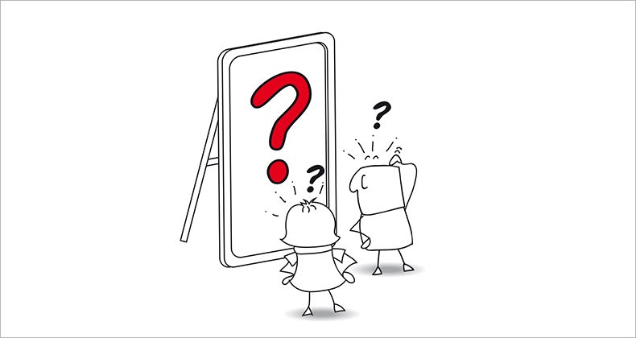

¿Qué tal si escuchas esto tranquilamente mientras lees este contenido?
Técnicas de organización
Si tienes realmente más tareas en tu rutina diaria de las que puedes abarcar, entonces estás organizando mal tu agenda. Puede que haya un problema a la hora de decir que no, a la hora de calcular el tiempo que te llevará cada cosa, de asumir responsabilidades que podrías delegar o que no son tuyas, de poner límites, o de pedir ayuda. Si más bien el problema es que no encuentras hueco para cosas que consideras importantes, que haces mucho pero sientes que no avanzas, que estás siempre ocupado pero no eres productivo, o que pierdes el tiempo y no sabes en qué, etc. Entonces puede que haya varios hábitos que modificar para optimizar el uso de tu tiempo.
Análisis personal
Revisa tu día a día, las actividades que realizas y las cosas que consumen tu tiempo, toma nota de ello. Algo tan simple como esto te ayudará a tener una buena base sobre la que trabajar tu organización.
Elimina las distracciones
Nuestro cerebro no tiene capacidad para procesar en paralelo: sino que va saltando su atención de una actividad a otra. Cuando las interrupciones son frecuentes o vamos saltando de una cosa a otra en poco tiempo, no conseguimos profundizar ni focalizarnos en ninguna.
Procura trabajar de forma continuada y en una sola cosa a la vez. Si estás escribiendo un informe, no atiendas llamadas ni mires el email. Las interrupciones rompen la concentración y tardamos en volver a conectar, nos hacen más lentos, cometemos más errores, y además nos generan ansiedad.
Es imposible en algunos contextos eliminar las interrupciones por completo, pero hemos de tener un método para evitar todas las que podamos.
Establece claramente tus prioridades
Muchas veces estamos llenos de pequeñas cosas urgentes que no nos deja lugar para lo realmente importante. Hacemos mil cosas y tenemos la sensación de no haber hecho nada. Haz una lista de tus “piedras grandes”, de las cosas que son importantes en tu vida. Luego tradúcelo en acciones concretas que puedas incorporar en tu día a día (por ejemplo: llamar a mi Padre cada martes a las 20h, ir a clase de yoga el sábado a las 10h, quedar para tomar un café con los amigos, dedicar el domingo de 20 a 21 a leer...).
Por último, cambia los "Tengo" por "Quiero"
Como he comentado en varias ocasiones, la forma que tenemos de contarnos a nosotros mismos las cosas determina cómo las vivimos emocionalmente. Si hay una palabra que quite energía esa es “Tengo”. Si planificamos nuestro día usando este imperativo es probable que acabemos agobiados y desmotivados:
”Hoy TENGO que, esto y lo otro, y TENGO que…”.
Sin embargo, cuando usamos otras palabras como “me gustaría”, “quiero”, “elijo”, “prefiero”... La sensación es diferente.